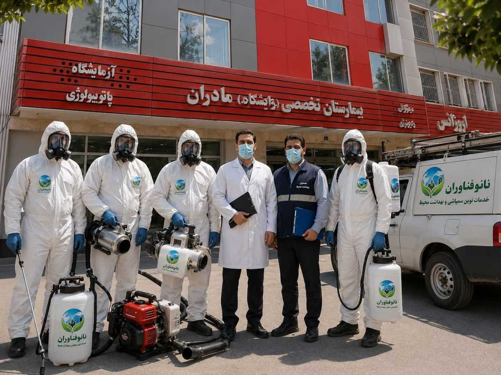

سمپاشی سوسک؛ راهکاری اصولی برای حذف دائمی سوسکهای خانگی
روشهای مؤثر برای از بین بردن سوسکهای آشپزخانه، کابینت و فاضلاب و جلوگیری از بازگشت مجدد آنها.
ادامه مطلب →بخشی از پروژههای موفق شرکت سمپاشی نانوفناوران در مراکز درمانی، تجاری، اداری و مسکونی.

اجرای عملیات کنترل آفات در مراکز درمانی با رعایت کامل اصول بهداشتی.

اجرای پروژه کنترل آفات در مراکز خرید، فروشگاهها و مجتمعهای تجاری.

اجرای پروژه کنترل آفات در مدارس، دانشگاهها و مراکز آموزشی.

شرکت سمپاشی نانوفناوران بهداشت تهران با بیش از دو دهه تجربه، یکی از مجموعههای تخصصی و خوشنام در زمینه کنترل آفات شهری، خانگی و صنعتی است. ما با بهرهگیری از کارشناسان آموزشدیده، تجهیزات مدرن و سموم مورد تأیید وزارت بهداشت، خدماتی ایمن، مؤثر و ماندگار را در سراسر تهران ارائه میدهیم.
هدف ما ایجاد محیطی سالم، پاکیزه و عاری از هرگونه آفت برای منازل، مجتمعهای مسکونی، ادارات، رستورانها، هتلها، کارخانهها، انبارها، فروشگاهها، مراکز درمانی و سایر مراکز تجاری است.
شرکت سمپاشی نانوفناوران بهداشت تهران خدمات تخصصی کنترل آفات را برای رستورانها، هتلها، کارخانهها، انبارها، فروشگاهها، بیمارستانها، ادارات، مراکز آموزشی و سایر مراکز تجاری با رعایت کامل استانداردهای بهداشتی ارائه میدهد.
کنترل سوسک، مگس، موش و سایر آفات با رعایت کامل اصول بهداشت محیط و ایمنی مواد غذایی.
کنترل تخصصی ساس، سوسک، مورچه و سایر آفات برای حفظ آرامش و رضایت مهمانان.
اجرای برنامههای دورهای کنترل آفات برای محیطهای صنعتی با تجهیزات پیشرفته.
پیشگیری و کنترل آفات انباری، جوندگان و حشرات با استفاده از روشهای تخصصی.
حذف آفات مزاحم در محیطهای اداری با کمترین اختلال در روند فعالیت مجموعه.
اجرای عملیات کنترل آفات با رعایت دقیق دستورالعملهای بهداشتی و استفاده از سموم استاندارد.
ما با تکیه بر تجربه، دانش تخصصی، تجهیزات مدرن و استفاده از سموم استاندارد، خدماتی ایمن، مؤثر و ماندگار را برای مشتریان خود ارائه میدهیم.
سالها تجربه در زمینه کنترل آفات خانگی، تجاری و صنعتی در سراسر تهران.
استفاده از سموم مورد تأیید وزارت بهداشت با بالاترین اثربخشی و کمترین خطر برای انسان و محیط زیست.
اجرای خدمات توسط نیروهای آموزشدیده، باتجربه و آشنا با جدیدترین روشهای کنترل آفات.
اعزام کارشناسان در کوتاهترین زمان به تمامی مناطق ۲۲ گانه تهران و حومه.
ارائه ضمانت متناسب با نوع آفت و پشتیبانی پس از انجام خدمات برای آسودگی خاطر مشتریان.
ارائه مشاوره تخصصی قبل از انجام خدمات برای انتخاب بهترین روش کنترل آفات.
ارائه خدمات تخصصی برای منازل، آپارتمانها، ویلاها، رستورانها، هتلها، کارخانهها، انبارها و ادارات.
امکان عقد قراردادهای دورهای برای سازمانها، شرکتها و مراکز تجاری به منظور پیشگیری و کنترل مستمر آفات.
برای ارائه خدماتی دقیق، ایمن و مؤثر، تمامی عملیات کنترل آفات در شرکت سمپاشی نانوفناوران بهداشت تهران طبق یک فرآیند استاندارد و تخصصی انجام میشود.
از طریق تماس تلفنی، واتساپ یا ایتا درخواست خود را ثبت کرده و اطلاعات اولیه را با کارشناسان ما در میان بگذارید.
کارشناسان ما با بررسی نوع آفت، میزان آلودگی و شرایط محیط، مناسبترین روش کنترل را پیشنهاد میکنند.
در کوتاهترین زمان ممکن، هماهنگی لازم برای اعزام کارشناس و انجام خدمات در زمان مورد نظر شما انجام میشود.
عملیات توسط کارشناسان مجرب، با تجهیزات حرفهای و سموم استاندارد و مورد تأیید وزارت بهداشت انجام میشود.
پس از پایان کار، نکات لازم برای افزایش ماندگاری اثر سمپاشی و حفظ ایمنی محیط به شما ارائه خواهد شد.
در صورت نیاز، کارشناسان شرکت آماده پاسخگویی، پیگیری و ارائه خدمات پشتیبانی مطابق شرایط ضمانت خواهند بود.
شرکت سمپاشی نانوفناوران بهداشت تهران با بهرهگیری از تیمهای متخصص و تجهیزات پیشرفته، خدمات کنترل آفات را در تمامی مناطق ۲۲ گانه تهران و شهرهای اطراف ارائه میدهد. اعزام کارشناسان در کوتاهترین زمان انجام شده و خدمات با کیفیت یکسان در تمام مناطق اجرا میشود.
نیاوران، زعفرانیه، ولنجک، تجریش، فرمانیه، اقدسیه، الهیه، جماران، قیطریه، کامرانیه
صادقیه، پونک، شهران، جنتآباد، ستارخان، مرزداران، شهرک غرب، چیتگر، اکباتان، تهرانسر
تهرانپارس، نارمک، حکیمیه، مجیدیه، پیروزی، تهران نو، نیروهوایی، رسالت، لویزان، افسریه
یوسفآباد، امیرآباد، فاطمی، انقلاب، کریمخان، هفتتیر، بهجتآباد، ولیعصر، جمهوری، مطهری
نازیآباد، خزانه، جوادیه، یاخچیآباد، شوش، مولوی، خانیآباد، عبدلآباد، یافتآباد، شهرری
اسلامشهر، اندیشه، شهریار، قدس، رباطکریم، پرند، پردیس، بومهن، رودهن، پاکدشت و حومه
پس از ثبت درخواست، کارشناسان شرکت در سریعترین زمان ممکن به محل اعزام شده و خدمات کنترل آفات را با رعایت کامل اصول ایمنی و بهداشتی انجام خواهند داد.
ثبت درخواست خدماتشرکت سمپاشی نانوفناوران بهداشت تهران با اجرای صدها پروژه موفق در منازل، مجتمعهای مسکونی، رستورانها، هتلها، کارخانهها، انبارها، ادارات و مراکز درمانی، همواره رضایت مشتریان را در اولویت قرار داده است.

اجرای عملیات کنترل سوسک، ساس و مورچه در مجتمعهای مسکونی با استفاده از سموم استاندارد و کمخطر.

کنترل سوسک، مگس و جوندگان در رستورانها و آشپزخانههای صنعتی با رعایت کامل اصول بهداشت.

اجرای برنامههای تخصصی کنترل آفات در کارخانهها، انبارها و مراکز صنعتی با بازدیدهای دورهای.

اجرای عملیات تخصصی کنترل ساس، سوسک و سایر آفات در هتلها و مراکز اقامتی با حفظ آرامش مهمانان.

حذف آفات مزاحم از محیطهای اداری بدون ایجاد اختلال در روند فعالیت مجموعه.

اجرای عملیات کنترل آفات در درمانگاهها و مراکز درمانی با رعایت کامل دستورالعملهای بهداشتی.
اعتماد مشتریان بزرگترین سرمایه شرکت سمپاشی نانوفناوران است.
برای دریافت مشاوره رایگان و ثبت درخواست، فرم زیر را تکمیل کنید.
مطالب آموزشی شرکت سمپاشی نانوفناوران بهداشت تهران با هدف افزایش آگاهی خانوادهها، مدیران ساختمانها و صاحبان کسبوکار درباره پیشگیری و کنترل اصولی آفات منتشر میشود.
روشهای مؤثر برای از بین بردن سوسکهای آشپزخانه، کابینت و فاضلاب و جلوگیری از بازگشت مجدد آنها.
ادامه مطلب →
هر آنچه باید درباره ساس تختخوابی، روش انتقال، علائم وجود آن و شیوههای کنترل تخصصی بدانید.
ادامه مطلب →
بررسی مهمترین دلایل ورود موش، روشهای پیشگیری و کنترل تخصصی جوندگان.
ادامه مطلب →در این بخش به رایجترین سؤالات مشتریان درباره خدمات کنترل آفات شرکت سمپاشی نانوفناوران بهداشت تهران پاسخ دادهایم. اگر پاسخ سؤال خود را پیدا نکردید، با کارشناسان ما تماس بگیرید.
سموم مورد استفاده مطابق دستورالعملهای بهداشتی انتخاب میشوند و کارشناسان پس از پایان کار، نکات لازم برای حفظ ایمنی افراد و حیوانات خانگی را به طور کامل توضیح خواهند داد.
مدت زمان لازم با توجه به نوع آفت، نوع سم مصرفی و شرایط محیط متفاوت است و پس از انجام عملیات، زمان دقیق توسط کارشناس اعلام خواهد شد.
بله، برای بسیاری از خدمات، ضمانت متناسب با نوع آفت و شرایط محیط ارائه میشود. جزئیات ضمانت قبل از انجام کار به اطلاع مشتری خواهد رسید.
بله، شرکت سمپاشی نانوفناوران بهداشت تهران در تمامی مناطق ۲۲ گانه تهران و بسیاری از شهرهای اطراف خدمات ارائه میکند.
از طریق تماس تلفنی، واتساپ یا پیامرسان ایتا میتوانید با کارشناسان ما ارتباط برقرار کرده و پس از دریافت مشاوره رایگان، زمان انجام خدمات را هماهنگ کنید.
بسته به نوع آفت و محل مورد نظر، ممکن است اقدامات سادهای مانند جابهجایی برخی وسایل یا پوشاندن مواد غذایی لازم باشد که قبل از مراجعه، توسط کارشناسان به شما اطلاع داده میشود.
برای دریافت مشاوره رایگان، استعلام هزینه، ثبت درخواست خدمات و هماهنگی اعزام کارشناس، از طریق راههای ارتباطی زیر با ما در تماس باشید.
همه روزه از ساعت ۸ صبح تا ۹ شب
تمامی مناطق ۲۲ گانه تهران و شهرهای اطراف
نقشه موقعیت شرکت در این قسمت نمایش داده خواهد شد.